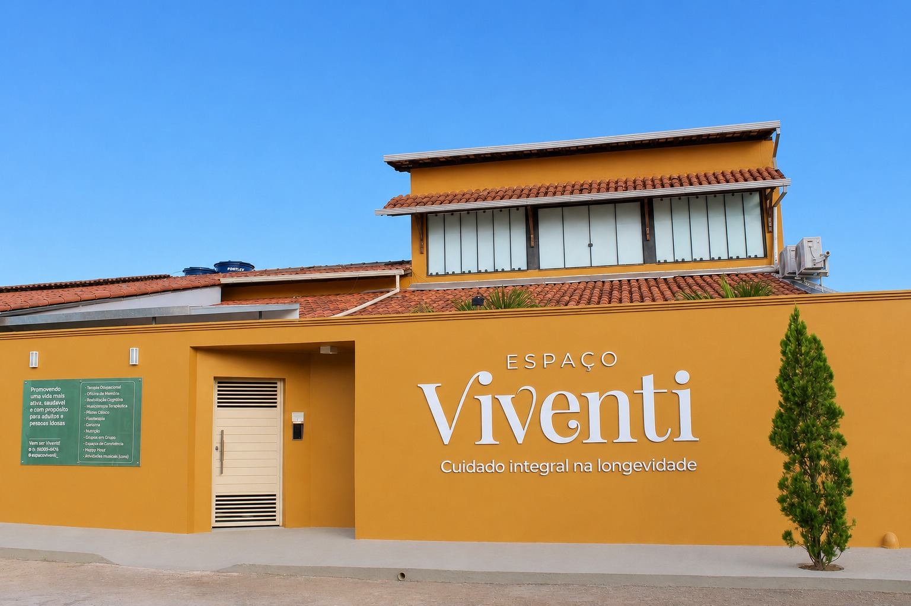

Corpo
Força, equilíbrio e mobilidade com propósito clínico.
Longevidade · Ipatinga · Vale do Aço
Corpo, cognição e vida social em um único espaço especializado em gerontologia, para quem quer envelhecer com independência e autonomia.
“
Você percebeu uma mudança. Um esquecimento que preocupa. Uma queda que assustou. O isolamento foi aumentando acompanhado de um desânimo. Você quer ajuda de quem vai saber cuidar e orientar. De uma equipe especializada em envelhecimento em um espaço criado para oferecer as melhores soluções.
O que costuma pesar
Sobrecarga
que recai sobre quem cuida em casa, todos os dias.
Isolamento
e a rotina que vai se perdendo aos poucos.
Medo
de perder a autonomia e a independência.
Nosso espaço

Nosso espaço
Um ambiente pensado em cada detalhe para acolher, cuidar e conviver, porque o lugar também faz parte do cuidado.
Um lugar pensado para acolher, estimular e cuidar. Veja como é o ambiente onde cada detalhe foi planejado para quem envelhece bem.
Os quatro pilares
Serviços
Centro Dia
Viventi Integral
Para quem precisa de suporte contínuo e para a família que merece tranquilidade.

Diferenciais
Depoimentos
Maria Íris e Iracema contam sobre sua experiência no Espaço.
Depoimento · Maria Íris e Iracema
Como começar
Perguntas frequentes
A primeira visita é o melhor lugar para conversar, sem compromisso.
Conheça o espaço, a equipe e o cuidado presencialmente, no seu tempo.